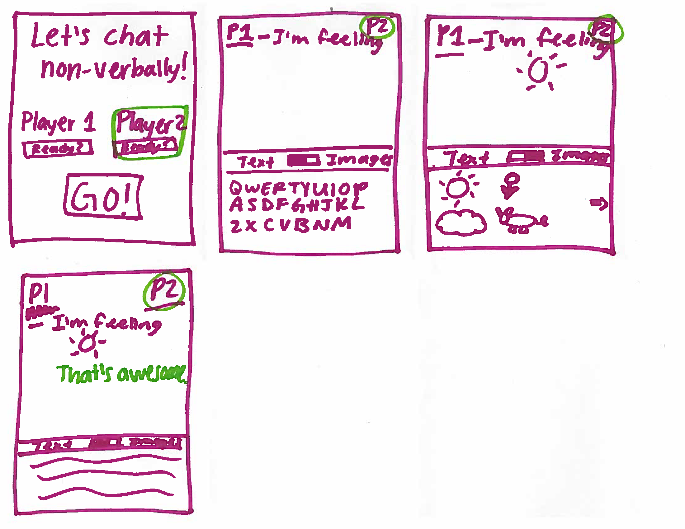

Design Development
See the previous version of our design brief here.
Project Description
Our team is designing an application that is intended to assist in communication when one or more people are communicating nonverbally. People may need or prefer to communicate nonverbally for many reasons. For example, a person who is deaf or hard-of-hearing may need to communicate with somebody who normally communicates verbally and does not know sign language. People who communicate nonverbally have many challenges communicating with people who normally communicate verbally.
We created a diagram of possible users and use cases of our application, which is included below.
We are building a mobile application to facilitate this communication. This is an app that users who are nonverbal would download, and open in situations in which they need to communicate with somebody who usually communicates verbally. The app will allow the nonverbal user to inform the other user about the situation effectively, and then allow the two people to communicate without speaking.
Our goal is to create an app that would improve the ability and ease of communication for people who are nonverbal. This will allow people who are nonverbal to connect and interact with people who communicate verbally in an easier and more positive manner. In addition, our product would effectively inform people about the reasons and nuances of being nonverbal and allow the uninformed people to positively interact with people who are nonverbal.
User Needs
We have gotten to interact with eight users, throughout multiple interactions of different types. Our first type of user interaction involved engaging our users in nonverbal conversation on a piece of plain paper or a sticky note. This was how we received a crucial first piece of feedback: Our users chose to write and draw all over the paper in a nonlinear fashion. This is what we consider the inspiration for our design breakthrough.
We were limited in that when we interacted with users on campus, both of us knew that the other could speak and hear. In an ideal situation, a user interaction would occur with complete strangers, so that we could get user research from a more realistic situation. An interaction in which one of the users is actually nonverbal would also be ideal. This means that users wouldn’t be able to rely on verbal cues as a crutch.
We identified several needs from our initial user interactions. Our users need that their communication with others is symmetric. People prefer to communicate to others in the same manner in which they are being communicated with. For example, if the microphone of somebody in a video chat isn’t working, the rest of the group will tend to end up typing so that they are all communicating in the same way. We believe that this is due to users preferring to be on an equal footing with the people that they are communicating with.
People who communicate nonverbally need a conversational tool with a low startup time and activation energy. Current options in this space require setup time or supplies, and seem less efficient than speaking to people who are used to communicating verbally. For example, writing requires more time and supplies than speaking, and texting requires the exchange of contact information. Neither of these lend themselves seamlessly to casual conversation between strangers. The result is that people who are used to communicating verbally often continue to do so, even when it means communicating asymmetrically.
Our app also needs to ease people who normally communicate verbally into a nonverbal conversation seamlessly. From our users, we’ve learned that people who communicate verbally often default to responding verbally even in situations when responding verbally is inappropriate. For example, people often respond verbally when somebody who is deaf-oral speaks to them. Our design will incorporate interface elements and behaviors that guide verbal users to respond nonverbally.
Nonverbal users also need to not feel anxious when attempting to communicate with verbal users. People who are nonverbal can feel anxious about conversing with people who are verbal for many reasons. It is stressful to attempt to communicate with somebody else who doesn’t understand what you are saying, and it is stressful to attempt to communicate with somebody when it is difficult to understand them. Nonverbal users adopt several strategies to avoid communicating with others, such as dropping a note and exiting the situation. Our solution should allow nonverbal users to feel relaxed about talking to others.
Design Ideas
When ideating design ideas, we had been pigeonholing ourselves by only thinking about ways that we could change what people typically consider the usual back and forth texting model. The texting app that most people use on a daily basis features chat bubbles that constrains the flow of the conversation to linear.
However, after thinking of alternatives to this linear, one-way chat style, we came up with several possible designs. We ended up settling on a design that incorporates three major unique aspects: spatial navigation, quick-reply icons, and purposeful interactivity.
When designing and performing user observations, we noticed that a key part of pen-and-paper interaction was the ability to communicate spatially and refer to previous parts of the conversation. We incorporated this into our design by creating a system in which users can zoom in or out on portions of the conversation, as well as the have the ability to pan around the phone’s canvas. This allows users to communicate spatially and hide portions of the conversation that aren’t currently relevant but may be returned to or referenced in the future.
Also during user observation, we noticed that users created standard answers that they could refer to in order to answer questions or respond to the other user quickly. Two of our users drew a “Yes” and a “No” on the piece of paper, and would quickly point to those to respond to inquiries. We’ve incorporated this into our design by putting a set of quick-reply icons on the screen. This will allow our users to respond to the other user very quickly. This meets our need of having efficient conversations.
The third key portion of the design is purposeful interactivity. This means that we are designing our app to guide verbal users to respond by interacting with the screen, rather than with their voice. We performed a test comparing different possible ways of encouraging others to respond. We compared a design where the interface displays a question and a textbox to a design that displays a question with buttons. In our informal user testing, users were more likely to respond with their voice when shown the interface with the textbox. From this experiment, we have thought carefully about how to guide verbal users to respond by interacting with the phone, which usually means presenting user interface elements that clearly need to be interacted with. Doing this guides verbal users to respond by interacting with the interface and not with their voice, which fulfills our requirement that we ease people who normally communicate verbally into a nonverbal conversation seamlessly.
We also generated several other possible designs that might fulfill our users’ needs that didn’t make their way into our final design.
One design idea was to create a gamified communication app. This was discussed as a way to encourage levity, which could help “break the ice” and make conversations more casual and fun. While we drew up potential interfaces and elements for a gamified chat functionality, we found that the game aspects would detract from the ease-of-use: for example, framing conversations as games can add more start-up time at the beginning of a discussion, or could confuse/scare off potential conversational partners. Instead, we shifted to the idea of purposeful interactivity.
We also chose to move away from the traditional linear text-interface and design more of a spatial interface. Based on the user interactions we’ve observed, when the users were offered the freedom to incorporate spatial elements, they all took advantage of this feature. They all seemed to enjoy this change from the current chat app setup. The spatial setup also promoted the users to use more visual communication/features than literal/textual features. This resembled more of the paper-and-pencil conversations that people are used to have.
Topic prompts/selection is something we have chosen not to implement as a feature. While it seemed like a good idea at first, we found out through user testings that this was rather distracting and constraining people’s thought streams. This feature drove our interface further away from our vision for the app to be a casual communication tool.
We also considered the idea of choosing keywords for portions of the conversation. This would allow users to quickly find portions of their conversation by its keyword. We also considered how this would play with the spatial navigation. One example design is that portions of the conversation that weren’t currently being discussed would collapse into the keyword icon. This would allow users to know where their previous portions of the conversation were spatially. However, we decided that there were a few problems with this approach. It adds additional setup time to the conversation, which is contrary to one of our user needs. This idea also adds an additional element of cognitive friction. Portions of the conversation may be either collapsed or not collapsed and it requires the user to be consciously remembering the keyword for portions of the conversation.
INTERACTION FLOW / STORYBOARD
PHOTOGRAPHS / SKETCHES
COMPREHENSIVE PROTOTYPE DOCUMENTATION (APPENDIX)
Key Insights
One insight that we gained is that it is very difficult to improve upon communication tools because there are so many alternatives and trade-offs with different communication mediums. Every possible communication tool has upsides and downsides. Phones can provide conversation props like hyperlinks and media, which add to the experience of a conversation. However, we also received feedback from our users that they were worried that the small space of the phone would not allow them to communicate in a spatial fashion. Users remarked that they weren’t able to draw in such a small space with their fingers. Communicating with pen and paper is slow and unwieldy, but the spatial freedom and expressive power of a pen is hard to beat. In coming up with our solution, we have had to face the challenge that no matter which decision we choose, there are always downsides to making a particular design decision.
Another key insight is that it is difficult to develop a solution in which people communicate on a device which is both very valuable and very personal. For obvious reasons, users have doubts about handing their phones to people with whom they are not very familiar. Other users are tentative about taking another person’s most prized possession from the hands of its owner. For example, in one of our user interviews in which we had two users testing both sides of the conversation, there was confusion about what to do when the nonverbal user handed the other user their phone.
Our users want conversations to be “a fun time, not a business time.” Users prefer when their conversations are relaxed. This makes the conversation more enjoyable and less stressful. Managing stress during communication is a challenge for nonverbal users due to the raised probability of a misunderstanding in communication.
To conclude, we are going to focus our attention on creating a comfortable, user-friendly spatial communication tool to allow users of any type to share ideas with one another in a symmetric way. Our goal is to allow people to communicate in a shared language, whether their language barriers exist in nonverbal vs. verbal or even different languages of the world.